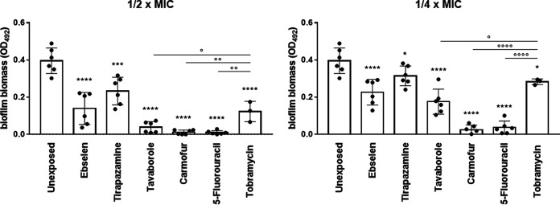
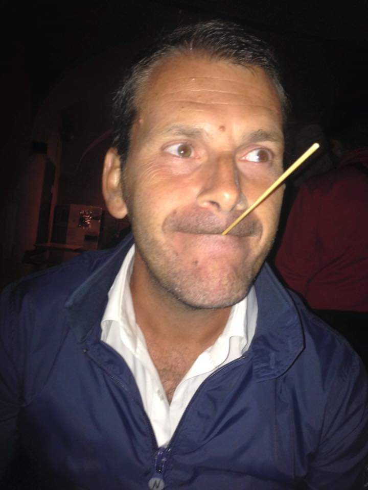
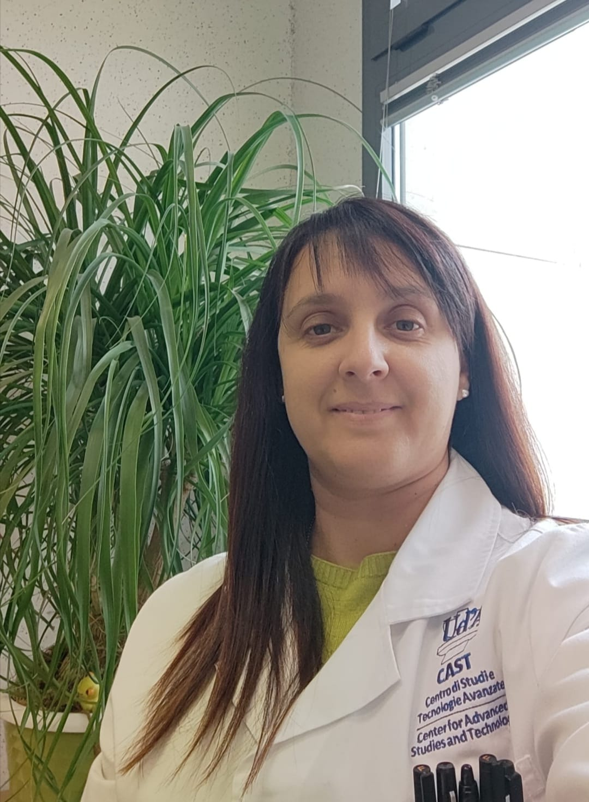

Nuove attività antimicrobiche da uno screening di farmaci

- La domanda
- Quali farmaci esistenti meritano di essere investigati contro P. aeruginosa?
- Il modello
- Condizioni sperimentali rilevanti per la fibrosi cistica.
Studiamo come i microrganismi persistono nell’ospite e valutiamo nuove strategie contro le infezioni difficili da trattare.
Microbiologia Traslazionale e Strategie Antimicrobiche
Dipartimento di Scienze Mediche, Orali e Biotecnologiche
Università "G. D'Annunzio" di Chieti-Pescara
Un microrganismo può cambiare comportamento quando vive in comunità o interagisce con l’ospite. Studiamo biofilm, virulenza e condizioni dell’infezione per capire come questi fattori influenzino la risposta ai trattamenti.
Da questa conoscenza partiamo per valutare molecole candidate, farmaci riposizionati e combinazioni antimicrobiche, con particolare attenzione alle infezioni respiratorie nella fibrosi cistica.
Biofilm, resistenza, tolleranza e persistenzaCapire come le comunità microbiche si formano e sopravvivono.
La domanda e l’approccio02Colpire le funzioni che permettono al patogeno di causare danno.
La domanda e l’approccio03Cercare nuove attività in molecole già conosciute.
La domanda e l’approccio04Misurare come interagiscono antibiotici e molecole candidate.
La domanda e l’approccio05Studiare il trattamento nel contesto dell’interazione con l’ospite.
La domanda e l’approccio


Professore ordinario
Coordinatore del TMASlab

Professoressa associata
Microbiologia e Microbiologia Clinica
Biologa e specialista in Microbiologia e Virologia
Collaboratrice volontaria
Tesi e tirocini sono occasioni per trasformare una domanda in un esperimento, discutere i dati e imparare a comunicarli.
Tirocini, tesi e formazioneIl confronto tra crescita e sopravvivenza aiuta a capire perché alcune comunità microbiche rispondano diversamente ai trattamenti.
LeggiDalla selezione delle molecole alla verifica dei risultati: il percorso che trasforma un primo segnale in una domanda scientifica.
LeggiIl percorso divulgativo presentato per il 26 settembre 2026: osservare, fare domande e mettere alla prova il proprio ragionamento.
LeggiEsplora il mondo dei microrganismi, scopri come agiscono gli antibiotici e mettiti alla prova con le nostre demo didattiche.
Entra nella divulgazioneLe linee di ricerca, i lavori selezionati e i riferimenti scientifici.
Risorse e pubblicazioniApprofondimenti sugli antibiotici, immagini e attività didattiche.
Comincia dagli antibioticiCollaborazioni scientifiche, tirocini e tesi.